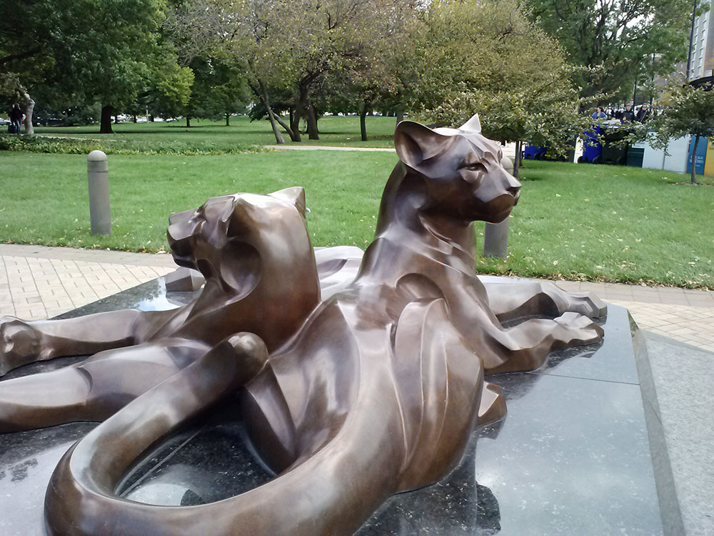
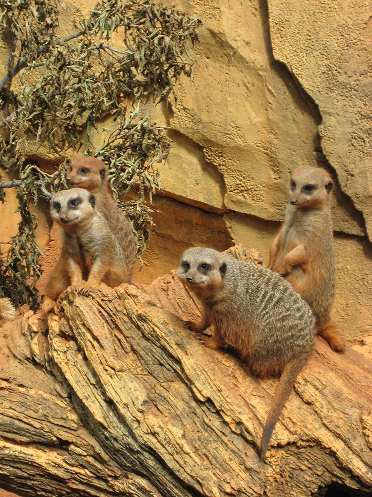

35-acre zoo in Lincoln Park was founded in 1868, making it the fourth oldest zoo in North America
General Information
May 23–September 7: Weekdays: Gates 8am–5pm, Buildings 10am–4:30pm
May 23–September 7: Weekends & Holidays: Gates 8am–7pm, Buildings 10am–6:30pm
Hours may vary for special events
Children: Free
Adults: Free
Seniors: Free
How to Get There
From Chicago, IL: Take N Clark St north toward Lincoln Park and continue to the zoo entrance at 2001 N Clark St, located near the intersection of Clark Street and Fullerton Parkway in Lincoln Park.
Overview
Lincoln Park Zoo is a 35-acre (14 ha) zoo in Lincoln Park. The zoo was founded in 1868, making it the fourth oldest zoo in North America. It is also one of a few free admission zoos in the United States.
Lincoln Park Zoo is home to a wide variety of animals. The zoo's exhibits include big cats, polar bears, penguins, gorillas, reptiles, monkeys, and other species totaling about 1,100 animals from some 200 species.
Redeveloped from the former Robert R. McCormick Bear Habitat in the zoo's northeast corner, Walter Family Arctic Tundra is a new exhibit for the polar bear, larger than the previous habitat with more land for the bears to roam on; instead of strict rockwork, there is natural grass, a new underwater viewing area, a maternity den, and enough space to support a small breeding family of bears.
Linked to the nearby Regenstein African Journey, Penguin Cove is a new outdoor African penguin exhibit, where visitors can watch as these tropical penguins dive into the water, with a behind-the-scenes area for hatching chicks and breeding the species. The zoo also offers indoor Penguin Encounters. The exhibit opened to the public in October 2016.
Opened in 2014, Macaque Forest is an exhibit allowing guests to connect with a troop of 10-15 Japanese macaques in a camouflaged forest scene with views from both above and eye-level with the animals. The exhibit features a "hot spring", a trademark favorite of the species, which allows them to warm up in the winter and amuse guests. It also functions as a dedicated research station for the macaques. It is the zoo's third exhibit to house primates.
The Regenstein African Journey exhibit is a 60,000-square-foot indoor-and-outdoor exhibit which opened in May 2003 on the site of the zoo's former Regenstein Large Mammal House. It simulates four distinct habitats from the African continent. Large skylights permit natural light into the indoor area, and guests are greeted[clarification needed] quickly by black-and-white colobus monkeys and African spoonbills in a rainforest setting as they enter Africa. The second section focuses on African rivers, with massive glass panels for hybrid land/water exhibits for West African dwarf crocodiles, endangered pygmy hippopotamuses, and a cichlid tank with an 11,000-lb., 7-in.-thick glass panel. The third section, focused on the African savanna, featured habitats for a large group of meerkats, a space for the zoo's aardvarks, and an indoor habitat for the Baringo giraffes. The fourth and final section simulates African kopje habitats, with klipspringer antelopes hopping along the way, yellow-collared lovebirds and Kenya crested guineafowl.
Lincoln Park Zoo's dedication to primate research continued[weasel words] when the Lester E. Fisher Great Ape House was closed and rebuilt with a new focus on the two African ape species, the common chimpanzee and western lowland gorilla. The new center, opened in 2005, has over 29,000 square feet of indoor and outdoor living space for three ape troops, featuring dozens of trees, artificial vines, real and simulated bamboo, as well as skylights, waterfalls, moats, heated logs, and termite mounds for chimpanzees to illustrate their knowledge of tools to 'fish' for termites in their mounds. The exhibit has three spacious habitats – the 12,000-square-foot Kovler Gorilla Bamboo Forest, an open-air habitat with a moat around it, dedicated to the zoo's main gorilla troop. Two additional exhibits - the Strangler Fig Forest and Dry Riverbed Valley - each with mesh netting to secure the animals, can accommodate either chimpanzees or gorillas. Huge glass panels give guests nose-to-nose access with the zoo's apes both in the trees and on the ground. The exhibit also contains the Lester E. Fisher Center for the Study and Conservation of Apes, which encourages zoo guests to engage in research and scientific development to conserve apes in the wild.
The new Pritzker Family Children's Zoo, which opened in 2004, features a number of native eastern American wildlife, and lets visitors of all ages connect with the wild creatures in our own backyard and engages them to think about how species survive in the wilderness. Small amphibians and reptiles are featured in a small indoor exhibit, along with a leaf-themed climber play area for youngsters designed by Tom Luckey, with slightly larger indoor exhibits for eastern screech owls, great plains rat snakes and American kestrels and large glass windows on each end so guests young and old can watch North American beavers and the popular North American river otters swim gracefully underwater at eye-level in their outdoor habitats, with educational displays about how beavers build dams. Outside the building there are many areas where local birds nest. The building is surrounded by small outdoor viewing areas for the same otter and beaver habitats as well as a small exhibit for wood ducks.
There are two significantly larger exhibits surrounding the path around the building for the American black bear and the endangered red wolf featuring heavy foliage and a naturalistic stream, allowing visitors to go eye-to-eye with the animals or for the animals to hide in the foliage. Statues of gray wolves and signs encourage guests to practice howling and teach them about wolf pack dynamics.
One of the zoo's most popular exhibits since its first iteration in 1879, the Kovler Seal Pool is one of oldest and most popular exhibits at Lincoln Park Zoo, and remains a favorite among zoo guests. The exhibit was renovated most recently in May 1999 in hopes of creating a habitat that most resembles their natural environment in the wild. There are three main viewing areas - from behind a fence in front of the tank on the main zoo path, an amphitheater-style seating area above the tank on the opposite end, and an underwater viewing gallery where visitors can watch the seals glide through the water.
The Regenstein Small Mammal-Reptile House is a 32,000-square-foot (3,000 m2) indoor exhibit that opened in 1997 and houses small animals in two main areas: the Gallery and the Ecosystem. The Gallery begins with a large room ringed with terrariums exhibiting reptiles and amphibians like axolotls, green tree pythons, poison dart frogs, and Sistrurus catenatus. The next part of the Gallery features dwarf mongooses, naked mole rats, straw-coloured fruit bats and other small mammals in and around a man-made baobab tree trunk. The building continues in the Ecosystem, a geodesic dome 45 feet (14 m) in height that simulates the world's tropical rainforests. The Ecosystem begins with a series of stream exhibits for dwarf caimans, dwarf crocodiles, and oriental small-clawed otters, continues with mixed-species exhibits for arboreal species like tamarins, two-toed sloths, and white-faced saki monkeys, and ends with exhibits for ground-dwelling Parma wallabies and Patagonian cavies.
This popular outdoor exhibit near McCormick Bird House allows visitors to observe powerful birds-of-prey through stunning outdoor aviaries that give them plenty of room to spread their wings or to perch on rocks or tree branches in their enclosures. These exhibits emphasize how birds-of-prey play a role as "nature's clean-up crew".
The zoo's historic Primate House first opened in 1927, featuring apes and monkeys from different locations and habitats in a series of small, identical barred cages typical of most early zoo exhibits. It became famous for its apes, including a gorilla named Bushman, until the Great Ape House opened. The Primate House's interior was heavily renovated in the early 1990s and it was re-opened as the Helen Brach Primate House in 1992 with eight diorama-style naturalistic exhibits simulating the swamps and rainforests of the animals' natural habitats in the wild.
This article uses material from the Wikipedia article "Chicago History Museum", which is released under the Creative Commons Attribution-Share-Alike License 3.0


.jpg){kind=link}

.jpg){kind=link}
